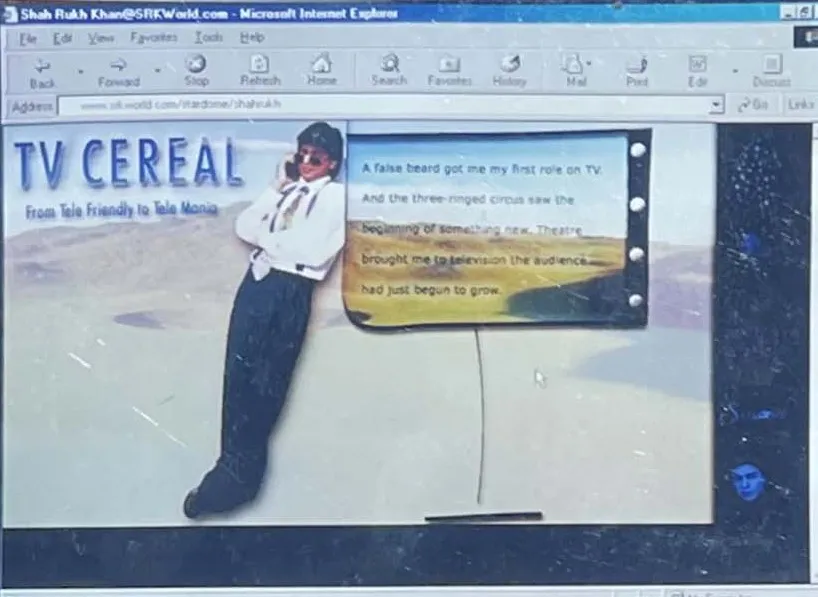

Part I · The Origin of the King, 1965 to 1999 · 6 of 57
Chapter 4 · TV Cereal: six and a half hours, 1988 to 1991
[image: SRKWorld.com, 2000: TV Cereal]

SRKWorld.com, 2000: “TV Cereal”. (Archive: the author’s collection)
He was meant to debut in a serial called Dil Dariya. It was delayed, so the country met him first as somebody else’s idea of a soldier. (Fact)
The part was meant for the director’s own son. Lt. Col. Raj Kumar Kapoor wanted a new face instead, and his son-in-law, a property dealer who had met the young Khan while showing houses, put his name forward. The audition was a run of a mile and a half at dawn, followed by boxing. (Fact. The Hollywood Reporter India, 28 Nov 2024) The sportsman who had lost his sport to a shoulder won his first role by running and boxing. (Analysis)
Fauji premiered on DD National on 18 January 1989: thirteen episodes about army recruits training to become commandos. He was cast as a second lead. Kapoor said the camera “loved him so much” that the script was rewritten around Lieutenant Abhimanyu Rai. (Fact. Wikipedia: Fauji; Scroll, 7 Dec 2015) Three years later he summed it up for India Today: “In six-and-a-half hours I became the nation’s heartthrob.” (Fact. quoted in The Hollywood Reporter India)
The arithmetic explains the miracle. In 1989 India had one national channel. Every episode of Fauji reached the whole television audience at once, because there was nothing else to watch. Thirteen half-hour episodes, six and a half hours of air time, put one face into every home with a set. (Analysis) [Unverified] the number of television households in India in 1989, from Doordarshan or the census. For scale, by 1995 television reached more than 70 million Indian homes. (Fact. Wikipedia: Television in India)
Iskra. The success brought him to Iskra, a Bombay production house run by Kundan Shah, Aziz Mirza and Saeed Mirza, which cast him in Umeed, Wagle Ki Duniya and Circus, nineteen episodes on DD National in 1989 and 1990. (Fact. Wikipedia: Circus) All three men return in this book. Kundan Shah would direct him in Kabhi Haan Kabhi Naa. Aziz Mirza would direct Raju Ban Gaya Gentleman and, in 1999, found Dreamz Unlimited with him and Juhi Chawla. Saeed Mirza sent him to Mani Kaul, who cast him in Idiot, a Dostoevsky adaptation that opened at the New York Film Festival in October 1992. (Fact. Wikipedia: Idiot; Wikipedia: Red Chillies Entertainment) The circus tent of 1989 is where the business partnership of 1999 began. (Analysis)
In the same years he took a small part in In Which Annie Gives It Those Ones (1989), Arundhati Roy’s first screenplay, directed by Pradip Krishen. It aired once on Doordarshan and all but disappeared, until a 4K restoration was selected for the Berlinale Classics in 2026. (Fact. The Statesman, 22 Jan 2026) The art cinema of Mani Kaul and Arundhati Roy, and the mass television of Fauji: he did both at once. (Analysis)
1991. His mother died, of complications of diabetes. (Fact) [Unverified] a 2026 report gives 1990; a primary record would settle the year. In April 1991 he decided to act in films, partly as a way of coping with the loss, and moved to Mumbai, taking on the care of his sister, Shahnaz, who had fallen into depression after their parents’ deaths and lives with his family still. (Fact) On 25 October 1991 he married Gauri, in three ceremonies on one day: civil, Hindu and the nikah. (Fact. Wikipedia: Gauri Khan; Business Today, 11 July 2026) Their children would be raised in both faiths. (Fact)
Television was his first direct line into the homes of the country: one channel, one evening a week, a whole nation looking at the same face, with no middleman. He would spend the next thirty-five years looking for its successor. (Analysis)
He arrived in Mumbai with no film family, no godfather and no money, a television face in an industry of dynasties. Everything he built after that, he built in public. (Analysis)
Lekh Tandon. The serial he was meant to debut in, Dil Dariya, was the work of Lekh Tandon, the director of the 1966 film Amrapali, who is credited with discovering him. Wikipedia dates the serial’s run to 1988-1989. (Fact. Wikipedia: Lekh Tandon) (Method note: this book’s account has Fauji reaching viewers first, in January 1989; both dates are printed.) Tandon then directed him in Doosra Keval, thirteen episodes on DD National from 1989 to 1990, as Keval, a village boy killed by a close friend after he refuses to do illegal work for him. (Fact. Wikipedia: Doosra Keval) Tandon died on 15 October 2017, aged 88. (Fact. Wikipedia: Lekh Tandon)
The reruns. During the COVID-19 lockdown of 2020, Doordarshan rebroadcast Circus and Fauji alongside Ramayana and Mahabharata, and on 14 May 2020 it announced that Doosra Keval would return as well. (Fact. Business Today, 14 May 2020) Thirty-one years on, the same public channel reached for the same young face to hold a country that could not leave home. The one-channel nation of 1989 had briefly come back, and so had its heartthrob. (Analysis)
Fauji 2. On 18 November 2024 a sequel, Fauji 2, premiered on DD National and the Waves streaming service, produced by Sandeep Singh, Vicky Jain and Zafar Mehdi under Legend Studios, with Vicky Jain and Gauahar Khan in the leads. He is not in its cast. (Fact. Wikipedia: Fauji 2) Its trailer was released as a tribute on his birthday, 2 November 2024, and its title track was sung by Sonu Nigam. (Fact. DT Next, 2 Nov 2024) A state broadcaster relaunching a 35-year-old title on his birthday shows that Fauji had become his brand as much as the army’s. (Analysis)